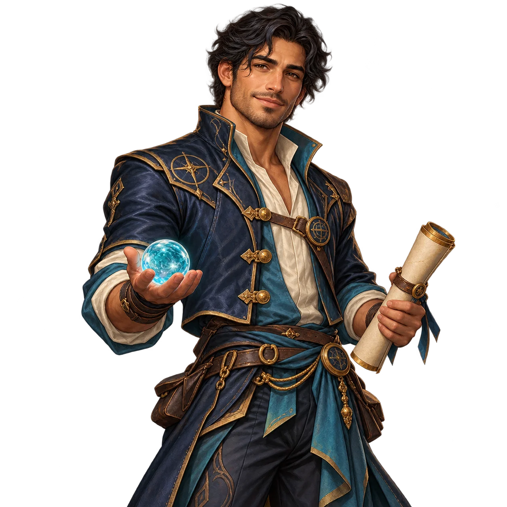
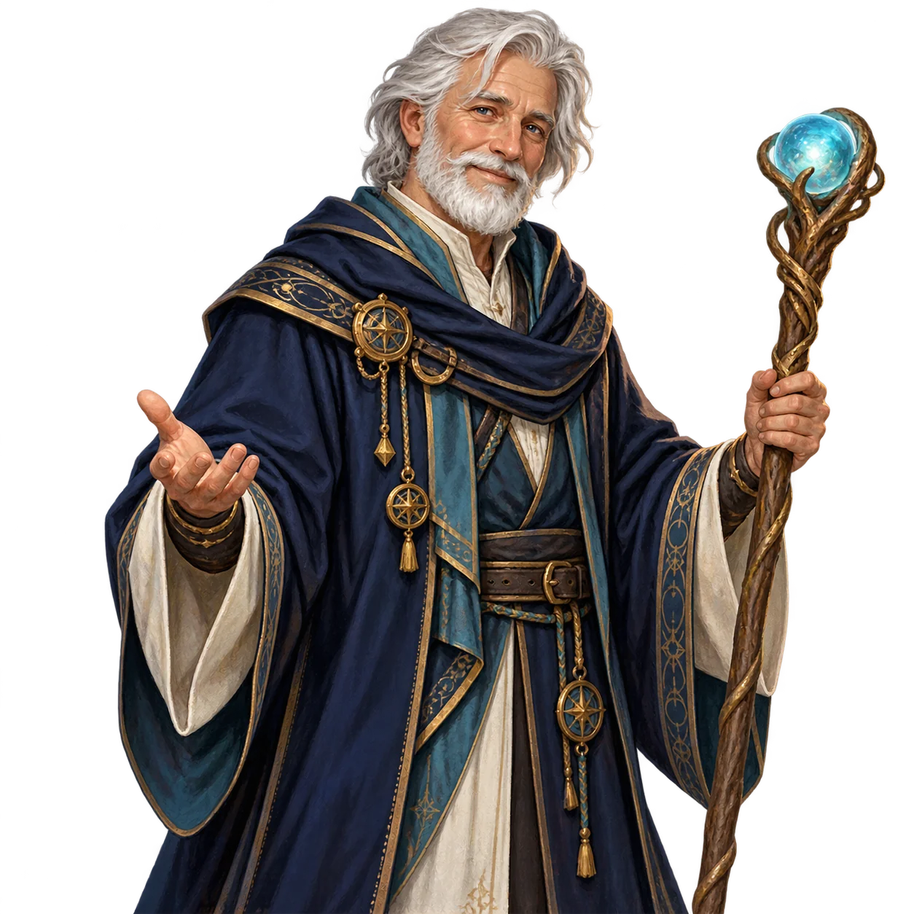
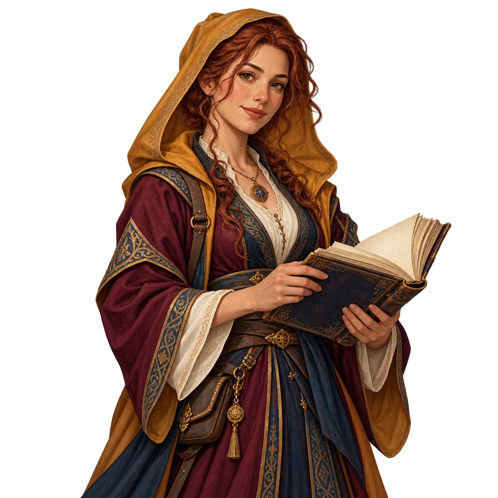
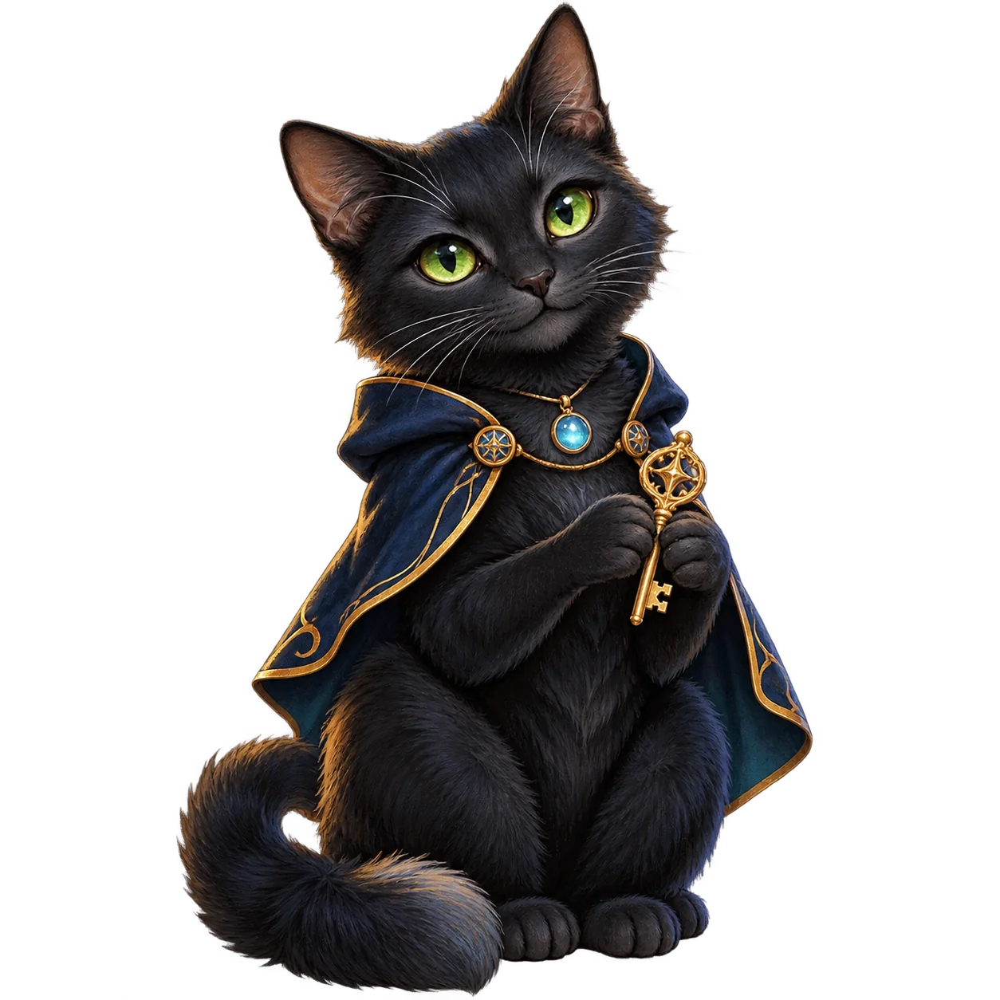
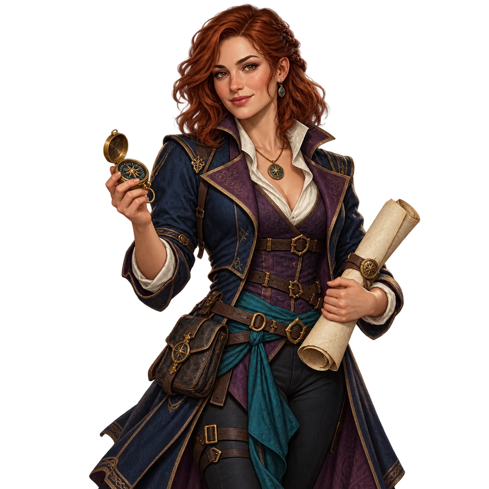

I
MÓDULO 01El Primer
El Primer
Despertar
Fundamentos de la gamificación y la experiencia lúdica.
0 / 3 misiones
Entrar al Valle ↗Una travesía para transformar ideas en experiencias educativas que merezcan ser vividas. Descubre territorios, supera misiones y fortalece tu forma de diseñar el aprendizaje.

Elige una clase para iniciar tu historia.
Fundamentos, herramientas y diseño: cada territorio te acerca a una propuesta para tu aula.
Fundamentos de la gamificación y la experiencia lúdica.
Diseño de actividades, herramientas e IA aplicada.
Perfiles, motivación y equilibrio del desafío.
Enfrenta cuatro guardianes en el desenlace RPG.
Recupera los fragmentos de cada misión y registra sus códigos con Nexo. Tu aventura se guarda en este navegador; puedes descargarla desde tu personaje.
Conoce a quienes resguardan los secretos de la travesía y te acompañarán en tus decisiones.



